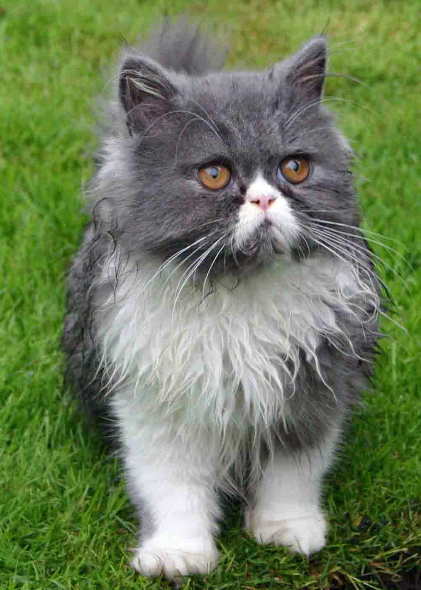

The Persian is a long-haired breed of cat characterized by its round face and short muzzle. In Britain, it is called the Longhair or Persian Longhair. It is also known as the Shiraz or Shirazi, particularly in the Middle East. The first documented ancestors of the Persian were imported into western Europe from Persia around 1620.[1] Recognized by the cat fancy since the late 19th century, it was developed first by the English, and then mainly by American breeders after the Second World War.
The selective breeding carried out by breeders has allowed the development of a wide variety of coat colors, but has also led to the creation of increasingly flat-faced Persians. Favored by fanciers, this head structure can bring with it a number of health problems. As is the case with the Siamese breed, there have been efforts by some breeders to preserve the older type of cat, the traditional breed, having a more pronounced muzzle, which is more popular with the general public. Hereditary polycystic kidney disease is prevalent in the breed, affecting almost half the population in some countries.
The placid and unpretentious nature of the Persian confers a propensity for apartment living. It has been the most popular breed in the United States for many years but its popularity has seen a decline in Britain and France.
References
This article uses material from the Wikipedia article ”Persian cat", which is released under the Creative Commons Attribution-Share-Alike License 3.0.
"persian cat Archives - Breed Guide". Breed Guide.
Picture: By Si Griffiths (Own work) [CC BY-SA 3.0], via Wikimedia Commons
{kind=link}